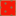

<!DOCTYPE html>
<html>
    <head>
        <title>Online bodemmeldingen</title>
    
        <meta charset="utf-8" />
        <link rel="stylesheet" href="http://cdn.leafletjs.com/leaflet-0.7.5/leaflet.css" />
        <link rel="stylesheet" href="css/MarkerCluster.css" />
        <link rel="stylesheet" href="css/MarkerCluster.Default.css" />
        <link rel="stylesheet" type="text/css" href="css/qgis2web.css">
        <link rel="stylesheet" href="css/label.css" />
        <link rel="stylesheet" href="http://k4r573n.github.io/leaflet-control-osm-geocoder/Control.OSMGeocoder.css" />    
        <script src="http://cdn.leafletjs.com/leaflet-0.7.5/leaflet.js"></script>
        <script src="js/leaflet-hash.js"></script>
        <script src="js/label.js"></script>
        <script src="js/Autolinker.min.js"></script>
        <script src="http://k4r573n.github.io/leaflet-control-osm-geocoder/Control.OSMGeocoder.js"></script>
        <script src="js/leaflet.markercluster.js"></script>
        <meta name="viewport" content="initial-scale=1.0, user-scalable=no" />
    </head>
    <body>
        <div id="map"></div>
        <script src="data/json_onlinebodemmeldingen.js"></script>
        <script>
        var map = L.map('map', {
            zoomControl:true, maxZoom:28, minZoom:1
        })
        var hash = new L.Hash(map);
        var additional_attrib = '<a href="https://github.com/tomchadwin/qgis2web" target ="_blank">qgis2web</a>';
        var feature_group = new L.featureGroup([]);
        var bounds_group = new L.featureGroup([]);
        var raster_group = new L.LayerGroup([]);
        var basemap = L.tileLayer('http://{s}.tile.openstreetmap.org/{z}/{x}/{y}.png', {
            attribution: additional_attrib + ' &copy; <a href="http://openstreetmap.org">OpenStreetMap</a> contributors,<a href="http://creativecommons.org/licenses/by-sa/2.0/">CC-BY-SA</a>'
        });
        basemap.addTo(map);
        var layerOrder = new Array();
        function restackLayers() {
            for (index = 0; index < layerOrder.length; index++) {
                layerOrder[index].bringToFront();
            }
        }
        map.on('overlayadd', restackLayers);
        layerControl = L.control.layers({},{},{collapsed:false});
        function pop_onlinebodemmeldingen(feature, layer) {
            var popupContent = '<table><tr><th scope="row"></th><td>' + Autolinker.link(String(feature.properties['gemeentena'])) + '</td></tr><tr><th scope="row"></th><td>' + Autolinker.link(String(feature.properties['1'])) + '</td></tr><tr><th scope="row"></th><td>' + Autolinker.link(String(feature.properties['2'])) + '</td></tr><tr><th scope="row"></th><td>' + Autolinker.link(String(feature.properties['3'])) + '</td></tr><tr><th scope="row"></th><td>' + Autolinker.link(String(feature.properties['4'])) + '</td></tr><tr><th scope="row"></th><td>' + Autolinker.link(String(feature.properties['5'])) + '</td></tr><tr><th scope="row"></th><td>' + Autolinker.link(String(feature.properties['6'])) + '</td></tr><tr><th scope="row"></th><td>' + Autolinker.link(String(feature.properties['7'])) + '</td></tr><tr><th scope="row"></th><td>' + Autolinker.link(String(feature.properties['8'])) + '</td></tr><tr><th scope="row"></th><td>' + Autolinker.link(String(feature.properties['9'])) + '</td></tr><tr><th scope="row"></th><td>' + Autolinker.link(String(feature.properties['10'])) + '</td></tr><tr><th scope="row"></th><td>' + Autolinker.link(String(feature.properties['11'])) + '</td></tr><tr><th scope="row"></th><td>' + Autolinker.link(String(feature.properties['12'])) + '</td></tr><tr><th scope="row"></th><td>' + Autolinker.link(String(feature.properties['13'])) + '</td></tr></table>';
            layer.bindPopup(popupContent);
        }

        function doStyleonlinebodemmeldingen(feature) {
            return {
                weight: 1.04,
                color: '#afb38a',
                fillColor: '#f61707',
                dashArray: '',
                opacity: 0.5,
                fillOpacity: 0.5
            };
        }
            var json_onlinebodemmeldingenJSON = new L.geoJson(json_onlinebodemmeldingen, {
                onEachFeature: pop_onlinebodemmeldingen,
                style: doStyleonlinebodemmeldingen
            });
            layerOrder[layerOrder.length] = json_onlinebodemmeldingenJSON;
        layerOrder[layerOrder.length] = json_onlinebodemmeldingenJSON;
        for (index = 0; index < layerOrder.length; index++) {
            feature_group.removeLayer(layerOrder[index]); feature_group.addLayer(layerOrder[index]);
        }
        bounds_group.addLayer(json_onlinebodemmeldingenJSON);
        //add comment sign to hide this layer on the map in the initial view.
        feature_group.addLayer(json_onlinebodemmeldingenJSON);
        raster_group.addTo(map);
        feature_group.addTo(map);
        var osmGeocoder = new L.Control.OSMGeocoder({
            collapsed: true,
            position: 'topright',
            text: 'vind adres',
        });
        osmGeocoder.addTo(map);
        var baseMaps = {
            'OSM Standard': basemap
        };
            L.control.layers(baseMaps,{' online_bodemmeldingen': json_onlinebodemmeldingenJSON},{collapsed:false}).addTo(map);
        map.locate({setView: true, maxZoom: 16});
        function onLocationFound(e) {
            var radius = e.accuracy / 2;
            L.marker(e.latlng).addTo(map)
            .bindPopup("You are within " + radius + " meters from this point").openPopup();
            L.circle(e.latlng, radius).addTo(map);
        }
        map.on('locationfound', onLocationFound);
        
        map.fitBounds(bounds_group.getBounds());
    </script>
</body>
</html>